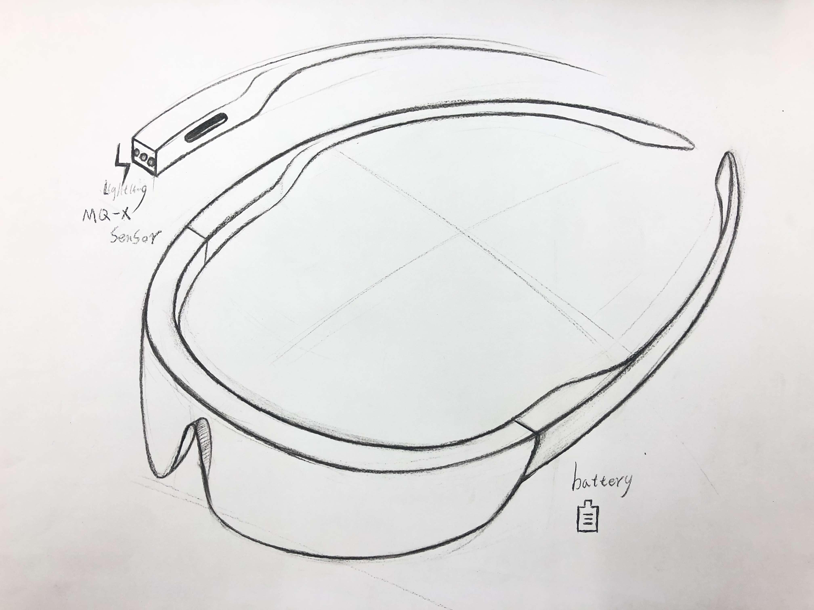

技術応用授業の中でichigojamと色んなセンサーを活用して、各チームでiot製品を制作しました
私たちのチームはiotとメガネに繋げて、新しいユニークなメガネのアイデアを考えました。
決めたのアイデアは自分の体臭を検査できるのメガネです。なぜなら自分の体臭を検査できるのメガネを
作らなければならないのか、実は人と人会う時、自分の体の匂いは相手に対して第一印象というものだ、
しかし、自分の体臭が重いか、薄いか、自分にとって本当にわかりにくい問題ですが、しかも体臭が重い場合は
相手に対してよくないイメージを残ることがあるかもしれません。ですから、私たちのチームは自分が知らないこと
をもっとわかりやすくために体臭を検査できるのメガネを作りました。
まず、センサーボックスの中に、利用できるセンサーを探す、目つけたセンサーは『ガスセンサー』です。
ガスセンサーとは、

目に見えないガスの存在を調べることができるセンシングデバイスです。家庭の都市ガス・プロパンガス警報器をはじめとして、エアコンや空気清浄機、自動車等に広く使われています。
体臭の検査するためにネット上にいろいろ調べて、このガスセンサーの原理に基づいてこのセンサーを活用しました。
さらにichigojamにネットに接続及びセンサーを動けるためにATOMでプログラミングを書きました。
体臭検査は３つのレベルを分けました:
匂い < 150の場合『大丈夫かも』
匂い 150~250の場合『まあまあ匂いよ』
匂い > 250の場合『臭いよ』
ネットに現れた。

最後、この製品のイメージがみんなに伝えやすくためにプロダクトスケッチを書きました。
